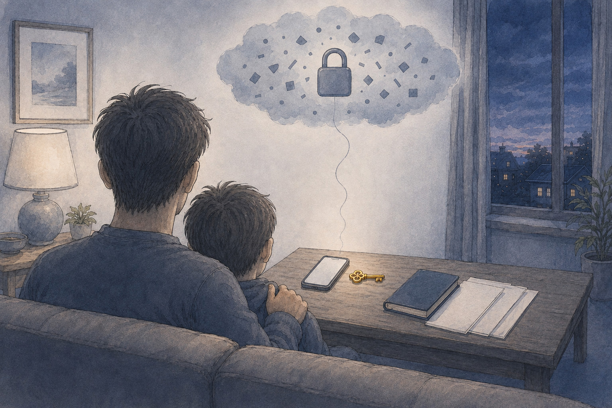
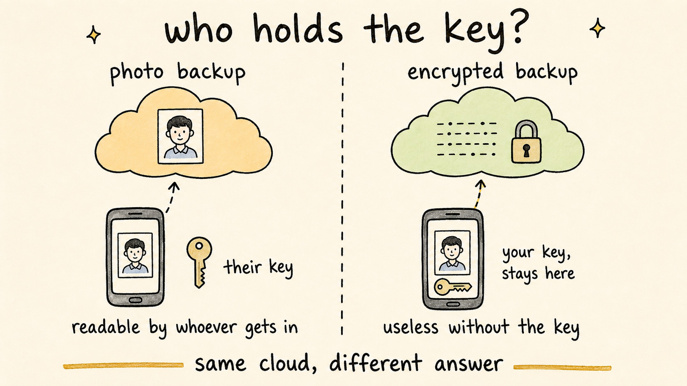

Encrypted Cloud Backup for Travel Documents: Who Holds the Key
Travel Document Vault

Key Takeaways
- "Encrypted backup" only means something once you know who holds the key. If the company can read your documents, the encryption is guarding them from strangers, not from the company.
- A backup encrypted on your phone before upload reaches the cloud as unreadable data. The storage provider holds ciphertext, not your passport.
- No account means no password reset. Lose the recovery code and the backup cannot be opened by anyone, us included. That is the deliberate trade.
- Write the code down before you depend on the backup, keep it away from the phone, and read it back once to check it is legible.
- A system device backup reinstalls the app but cannot bring your documents back, because the encryption key never left the old phone.
You've scanned four passports, two visas and the children's birth certificates into an app that keeps everything on your phone. Good. Then the obvious worry arrives: what happens when the phone goes in the sea, or gets lifted from a café table in Lisbon.
The answer is a backup. The awkward part is that almost every app uses the phrase "encrypted backup" and almost none of them mean the same thing by it. This article explains what the words actually mean and what you take on when a company genuinely cannot read your data. It ends with a short routine for the week before a trip, so a lost phone stays an inconvenience rather than a disaster.
What "Encrypted Backup" Actually Means
Encryption scrambles a file so that only a matching key can turn it back into something readable. That much is standard. The part that decides whether it protects you is where the scrambling happens and who ends up with the key.
Two setups both get sold as encrypted backup, and they behave very differently.
One sends the file to the company's server over an encrypted connection, then stores it encrypted at rest. Both of those statements are true, and both sound reassuring. But the company still holds the key, so it can decrypt your documents whenever it needs to: to run a feature, to answer a legal request, or because someone inside it made a mistake. Your passport scan is readable at the other end.
The other setup scrambles the file on your phone before it goes anywhere, using a key derived from something only you have. What arrives in storage is a block of noise, and nobody at the far end can read it, because nobody at the far end has the key. This is usually called end-to-end encrypted, or zero-knowledge.
So the question worth asking of any app is short: who holds the key? Everything else about the marketing follows from the answer.

The Recovery Code, and Why Nobody Can Reset It
Here is the part most articles skip, and it deserves saying plainly: Travel Document Vault has no accounts. You never gave us an email address, we never set you a password, and there is no record of you on any server we run. When you turn on cloud backup, the app generates a 24-character recovery code and derives the encryption key from it. The encrypted vault then goes to your own iCloud on iPhone and iPad, or your own Google Drive on Android, rather than to us.
The consequence is unavoidable. If you lose that recovery code, the backup can never be opened again. Not by you, not by Apple or Google, and not by us. There is no reset link, because there is no account to attach it to. There is no support ticket that recovers it, because we have never held it and cannot begin to guess it.
That sounds harsh written down, and it is worth being honest about it rather than burying it in a settings screen. It is the same trade you make with a house key: the lock is only worth having because no locksmith on earth keeps a spare, and that is exactly why losing yours is your problem. A company that can restore your documents after you forget everything is a company that could read them all along.
So treat the code as the one thing to get right:
- Save it before you rely on the backup, not afterwards.
- Keep it somewhere the phone's loss doesn't reach. A password manager on another device works. So does paper in the drawer where the birth certificates live.
- Read it back once from wherever you stored it. Handwriting that made sense at the time has a habit of becoming ambiguous in an emergency.
- Two copies in two places beats one perfect copy.
Travel Document Vault keeps your passports, visas and family documents encrypted on your own phone, with no account and nothing on our servers. Optional backup encrypts the vault on the device with AES-256-GCM and stores it in your own iCloud or Google Drive, sealed with a recovery code only you hold. One-time purchase on the App Store or Google Play, no subscription.
Is Cloud Backup Safe for Passport Scans?
It depends completely on what reaches the cloud, and that is a question about the app rather than about the cloud.
A photo of your passport in an ordinary photo library or a synced folder arrives readable. It sits in an account protected by a password you may have reused. It gets indexed and thumbnailed, and anyone who gets into that account sees a clean copy of the identity page. We went through what that exposure actually looks like in storing a passport in Google Photos. That is a genuine risk, and it is the setup most families are running without ever having chosen it.
A vault encrypted on the device before upload arrives as ciphertext. Someone who breaks into the cloud account finds a file they cannot open. The protection travels with the file rather than depending on the account it lands in.
Which is why the honest version of "is the cloud safe" is: the cloud is a delivery address, not a security model. What matters is the state the file is in when it gets there. Our comparison of the main places people keep passport scans goes through the trade-offs of each one.
| What you back up | State on arrival | Who can read it | If the account is breached |
|---|---|---|---|
| Photo of your passport in a photo library | Readable image | You, the provider, anyone with account access | Full identity page exposed |
| PDF in a synced drive folder | Readable file | You, the provider, anyone with account access | Documents exposed and downloadable |
| App backup where the company holds the key | Encrypted at rest | You and the company | Depends on the company's own key handling |
| Backup encrypted on your device first | Ciphertext | Only whoever holds the recovery code | Attacker gets an unreadable file |
What Goes Into the Backup, and What Stays Behind
The backup carries an encrypted copy of the vault: every profile, every scan, expiry dates, reminders, notes and attachments. Restore it and the app looks the way you left it.
Three things deliberately stay on the phone, and the recovery code comes first: it never leaves the device, which is the whole point. Your app lock stays local too, so Face ID, Touch ID or your PIN keeps other people out of the phone while the encryption keeps them out of the file. And the automatic local snapshots the app takes while you work stay on the device only.
That last one catches people out, so here's the blunt version. A system-level device backup reinstalls the app but cannot restore your documents. The encryption key never left the old phone, so the new one has nothing to decrypt with. If you want your vault to survive the phone, you need either cloud backup switched on or an exported file saved somewhere.
Restoring on a New Phone
The restore is short, which is the point of doing the preparation earlier.
Install the app on the new phone and sign in to the same iCloud or Google account you used before. Open Settings, then Cloud Backup, then Restore from Backup, and enter your recovery code. The vault comes back with its profiles, expiry dates and reminders intact.
The app also checks before it writes. If cloud backup detects an existing backup in that account, it prompts you to choose between restoring and starting fresh. A new phone cannot quietly overwrite what's already there.
Moving Between iPhone and Android
Cloud backup stays on one platform, because it uses your own iCloud on Apple devices and your own Google Drive on Android. Going from one to the other needs the other route.
Use Vault Export. Settings, Export Vault produces a single password-protected file containing everything, and you choose where it goes: the Files app, a drive, an email to yourself. On the new phone, Settings, Import Vault reads it back. It works in both directions and keeps names, dates, reminders, colours, notes and attachments as they were.
That exported file is also the answer for anyone who wants a copy that doesn't depend on a cloud account at all. It's a sensible thing to keep on a drive at home regardless of which phone you carry.
A Backup Routine That Survives a Lost Phone
Twenty minutes, once, before the next trip:
- Turn on encrypted backup and let the first upload finish while you're on home wifi.
- Write the recovery code somewhere that isn't the phone, then read it back from that copy to check it's legible.
- Make a second copy of the code and keep it in a different place from the first.
- Export the vault once and save the file somewhere you control, as a route that doesn't depend on any cloud account.
- Check the app shows a recent backup before you fly, the same way you'd check the passports are in the bag.
None of this is dramatic, and that's rather the idea. The families who cope well with a stolen phone abroad are almost never the ones who reacted brilliantly. They're the ones who spent twenty unremarkable minutes at the kitchen table a fortnight earlier.
One last note on expectations. Backup is a safety layer, and it doesn't guarantee anything: cloud accounts get locked out, codes get forgotten, storage services have bad days. For documents that really matter, keep something independent as well, whether that's a printed copy in a drawer at home or a second export on a drive.
Before you rely on this: it's a blog, not an official source. Rules and details change, and your situation may be different. We check what we publish, and we can still be wrong or out of date. If something here matters to your plans, confirm it with the authority that handles it before you act.
Frequently Asked Questions
What does encrypted backup actually mean?
It means the copy is scrambled on your phone before it goes anywhere, using a key that stays with you. Whoever stores the file afterwards holds a block of unreadable data, not your passport. The word only means something when you can answer the follow-up question: who holds the key? If the company that made the app can read your documents, the encryption is protecting them from outsiders, not from the company.
What happens if I lose my backup key?
The backup stays encrypted and nobody can open it, including us. There is no account, no password reset, and no support route that recovers it, because the recovery code never reaches us in the first place. That is the deliberate trade for nobody else being able to read your documents either. Write the code down before you rely on the backup, keep it somewhere separate from your phone, and read it back once to check you can.
Is cloud backup safe for passport scans?
It depends entirely on what reaches the cloud. A photo of your passport in a normal photo library or file sync folder arrives readable, and anyone who gets into that account can read it. A backup encrypted on the device before upload arrives as ciphertext, so the storage provider holds something it cannot open. Travel Document Vault encrypts the vault on your phone with AES-256-GCM and sends the encrypted file to your own iCloud or Google Drive rather than to a company server.
Can I restore my documents on a different phone?
Yes. Install the app on the new phone, sign in to the same iCloud or Google account, then open Settings, Cloud Backup, Restore from Backup and enter your recovery code. Your profiles, documents, expiry dates and reminders come back as they were. Note that a system-level device backup does not do this on its own: it reinstalls the app but cannot decrypt your documents, because the encryption key never leaves your original device.
Does the backup work between iPhone and Android?
Cloud backup itself stays on one platform, since it uses your own iCloud on iPhone and iPad and your own Google Drive on Android. To move between them, use Vault Export instead: Settings, Export Vault creates a single password-protected .tdvault file that you can send to yourself however you like, then Settings, Import Vault on the new phone reads it back. Import works across platforms in both directions and keeps names, dates, reminders, notes and attachments intact.
What is stored in the backup and what stays on the device?
The backup holds an encrypted copy of your vault: every profile, document scan, expiry date, reminder and note. Your recovery code is not in it, and never leaves your device. Neither does your app lock, so Face ID, Touch ID or your PIN protects the phone while the encryption protects the file. Automatic local snapshots also stay on the device only, which is why they cannot bring your vault back on a replacement phone.